💊Virtualización1. Introducción1.1. ¿Qué es la virtualización?1.2. ¿Para qué sirve en seguridad informática?1.3. Herramienta que usaremos: VirtualBox1.4. Requisitos mínimos del equipo1.5. Distribuciones Linux recomendadas1.6. Instalación de VirtualBox1.7. Primeros pasos en VirtualBoxAjustes recomendados (una sola vez)2. Preparar una máquina virtual con Linux2.1. Descargar la ISO de Linux Mint XFCE2.2. Crear la máquina virtual2.3. Hardware de la VM2.4. Crear el disco duro virtual2.5. Resumen2.6. (opcional) Configurar la ISO como disco de arranque3. Instalar Linux Mint XFCE en la máquina virtual3.1. Iniciar la máquina virtual por primera vez3.2. Entrar en el escritorio Live3.3. Instalación paso a paso de Linux3.4. Primer arranque y comprobaciones iniciales4. Puesta a punto del sistema4.1. Cambiar la resolución de pantalla4.2. Instalar Complementos de invitado (Guest Additions)4.3. Activar portapapeles compartido y arrastrar/soltar4.4. Actualizar el sistema4.5. Apagar el sistemaMáquina lista para trabajar
💊Virtualización
Tip
Este tema extra no forma parte del índice oficial, pero es clave para que podamos practicar con sistemas operativos reales sin riesgo. ¡Vamos a montar nuestro laboratorio virtual!
1. Introducción
1.1. ¿Qué es la virtualización?
La virtualización consiste en ejecutar sistemas operativos dentro de una máquina virtual (VM), como si fueran aplicaciones más. Es como tener un segundo ordenador dentro del tuyo.
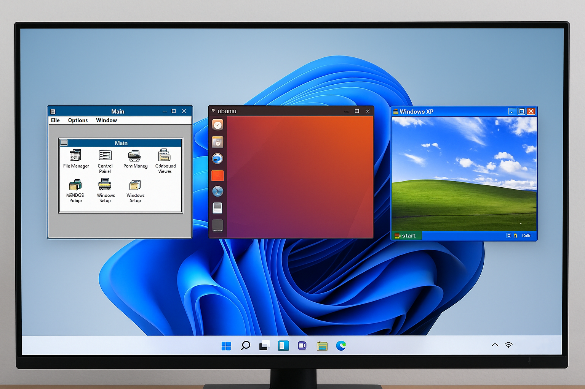
Note
Puedes tener Linux funcionando dentro de Windows (o viceversa) sin necesidad de hacer particiones ni borrar nada.
1.2. ¿Para qué sirve en seguridad informática?
Para hacer prácticas sin riesgo.
Para simular escenarios reales sin tocar tu sistema principal.
Para probar configuraciones, instalar software potencialmente peligroso o practicar con malware en entornos aislados.
Para montar laboratorios con varias máquinas comunicándose entre sí.
Important
En este curso vamos a usar máquinas virtuales para practicar herramientas de seguridad, usuarios, permisos, cifrado, redes, etc.
1.3. Herramienta que usaremos: VirtualBox
Vamos a trabajar con VirtualBox, un programa gratuito y de código abierto que permite crear y ejecutar máquinas virtuales de forma sencilla.
¿Por qué VirtualBox?
Es gratuito, multiplataforma y de código abierto.
Tiene buena documentación y soporte.
Permite usar snapshots (copias de estado).
Es fácil de usar incluso para principiantes.
1.4. Requisitos mínimos del equipo
Aunque depende de lo que vayamos a virtualizar, estos son los requisitos recomendados:
Al menos 8 GB de RAM (se puede con 4, pero con limitaciones).
30 GB libres en disco duro (mejor SSD).
Virtualización activada en la BIOS/UEFI.
Note
🪟 Cómo comprobar si la virtualización está activada en Windows:
Pulsa Ctrl + Shift + Esc para abrir el Administrador de tareas.
Ve a la pestaña Rendimiento.
Haz clic en CPU (en la columna de la izquierda).
En la parte inferior derecha, verás un campo que dice "Virtualización".
Si pone "Habilitado", ya está todo listo. Si pone "Deshabilitado", deberás activarla desde la BIOS/UEFI (lo veremos si hace falta en clase).
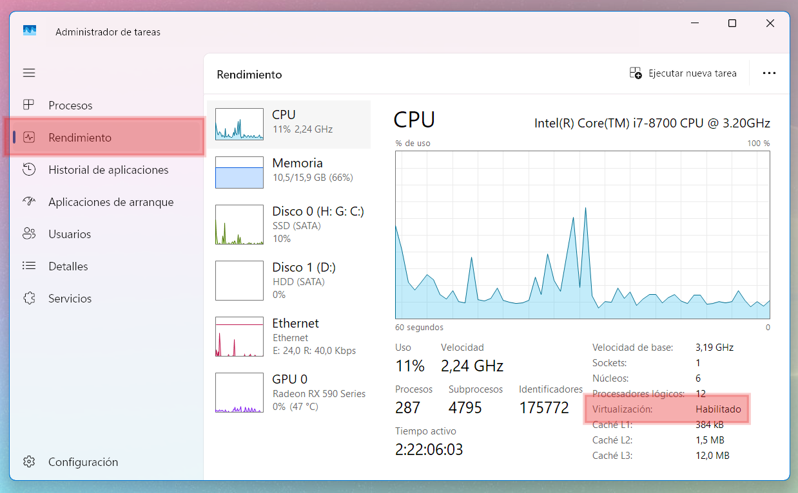
1.5. Distribuciones Linux recomendadas
Usaremos distribuciones ligeras y amigables:
Linux Mint XFCE
Xubuntu
Warning
¡No descargues todavía ninguna ISO!
Es posible que las ISOs se entreguen directamente en clase mediante pendrive para evitar saturar la red. Espera a que el profesor te indique cuándo y cómo hacerlo.
Ambas distribuciones son perfectas para iniciarse: ligeras, visualmente agradables y con buena compatibilidad en máquinas virtuales.
Note
🤓No utilizaremos Kali Linux ni Ubuntu estándar en este curso. Kali es una distribución orientada al pentesting profesional, con muchas herramientas avanzadas que pueden resultar confusas para principiantes. Además, su interfaz y rendimiento pueden ser más exigentes.
Ubuntu, aunque muy popular, utiliza un entorno de escritorio más pesado (GNOME), que no funciona tan fluido en máquinas virtuales con pocos recursos. Mint XFCE y Xubuntu ofrecen una experiencia mucho más fluida y accesible para el día a día.
1.6. Instalación de VirtualBox
🪟 Windows:
Descargar el instalador para Windows.
Ejecutar como administrador.
Aceptar las opciones por defecto.
Finalizar y abrir VirtualBox.
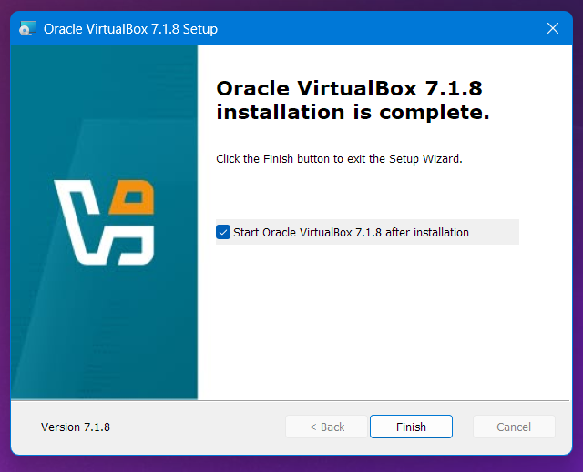
Caution
Durante la instalación de VirtualBox (el archivo .exe), es recomendable ejecutarlo como administrador para evitar problemas con los controladores de red o USB.
Pero una vez instalado, NO debes abrir VirtualBox como administrador, ya que eso puede crear máquinas virtuales en un perfil distinto del tuyo, y luego no las verás al abrirlo normalmente.
🐧 Linux (Debian/Ubuntu y derivados):
1sudo apt update2sudo apt install virtualboxTip
Así se instalaría Virtual Box en cualquier distribución Linux. Obviamente no te hace falta puesto que lo tenemos en Windows. Pero para que te vayas acostumbrando a ver comandos en Linux .
1.7. Primeros pasos en VirtualBox
Una vez instalado VirtualBox, verás una interfaz dividida en dos partes principales:
Barra lateral izquierda: donde aparecerán las máquinas virtuales que vayas creando.
Panel derecho: muestra la información y configuración de la máquina seleccionada.
Menú superior: con opciones para crear, modificar, clonar, exportar o iniciar máquinas virtuales.

Note
Aunque la interfaz es sencilla, es importante que antes de crear nada revises un par de ajustes globales.
Ajustes recomendados (una sola vez)
Ve a Archivo → Preferencias o pulsa Ctrl + G.
En la pestaña General, puedes cambiar el idioma si no está en español.
En Carpeta predeterminada de máquinas puedes elegir dónde se guardarán tus VMs (recomendado: una carpeta con espacio suficiente en tu disco).
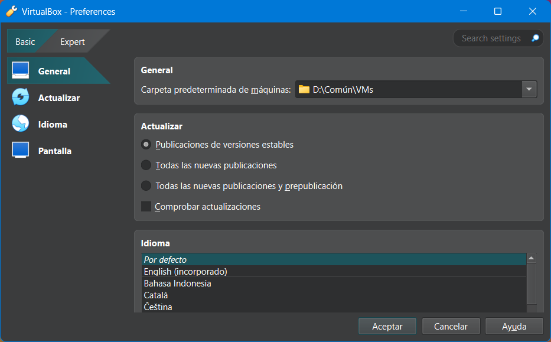
Tip
No es necesario tocar más opciones por ahora. Cuando creemos la máquina virtual, configuraremos los recursos (RAM, CPU, disco...) caso por caso.
2. Preparar una máquina virtual con Linux
Vamos a crear nuestra primera máquina virtual para instalar Linux Mint XFCE, una distribución ligera, sencilla y perfecta para empezar a trabajar en un entorno Linux sin complicaciones.
⚠️ ¡No te adelantes! ⚠️
Es fundamental que sigas los pasos exactamente en el orden en el que se van explicando en clase. Si haces algo antes de tiempo o cambias alguna opción sin saber, podrías romper la instalación, y eso te obligaría a borrar la máquina virtual y volver a empezar desde cero.
Esto puede llevar mucho tiempo perdido y retrasar a todo el grupo.
🔁 Si algo no te funciona, ¡para y pregunta antes de continuar!
2.1. Descargar la ISO de Linux Mint XFCE
Puedes obtener la ISO oficial desde esta página:
🔗 https://www.linuxmint.com/download.php
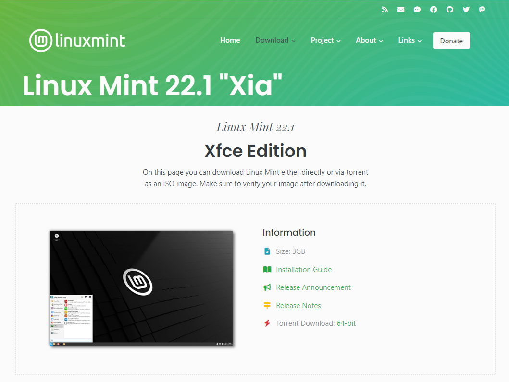
Warning
¡No descargues nada todavía! Espera a que el profesor lo indique. Es posible que las ISOs se repartan por USB para no saturar la red del aula.
2.2. Crear la máquina virtual
Abre VirtualBox y pulsa en el botón "Nueva" o usa el atajo Ctrl + N.
Escribe un nombre para la máquina, por ejemplo:
MintXFCE.Elige la carpeta de tu ordenador donde se guardará la máquina (por defecto será donde elegiste en el punto 1.7)
En Imagen ISO selecciona el archivo ISO que hemos conseguido en el punto 2.1.
Detectará el SO y se deshabilitarán los desplegables de
Edición,Tipo,SubtipoyVersión,Dejamos marcada la opción de "Omitir instalación desatendida" para hacer nosotros el proceso de instalación.
Haz clic en Siguiente.

Tip
🤖 ¿Has visto que pone "puede ser instalado de forma desatendida"?
VirtualBox puede detectar algunas ISOs y ofrecer una opción de instalación desatendida, que automatiza todo el proceso (usuario, idioma, disco, etc.).
Para este curso no vamos a usarla, porque lo que queremos es aprender a instalar Linux paso a paso.
Pero necesitas hacerlo rápido en casa o repetir el proceso, puedes probar esa opción para ahorrar tiempo. Solo asegúrate de recordar la contraseña que pongas, ¡porque no verás ninguna pantalla que te la pida!
2.3. Hardware de la VM
Recomendado: 2048 MB (2 GB) o más si tu equipo lo permite.
Procesadores: 2 CPU.
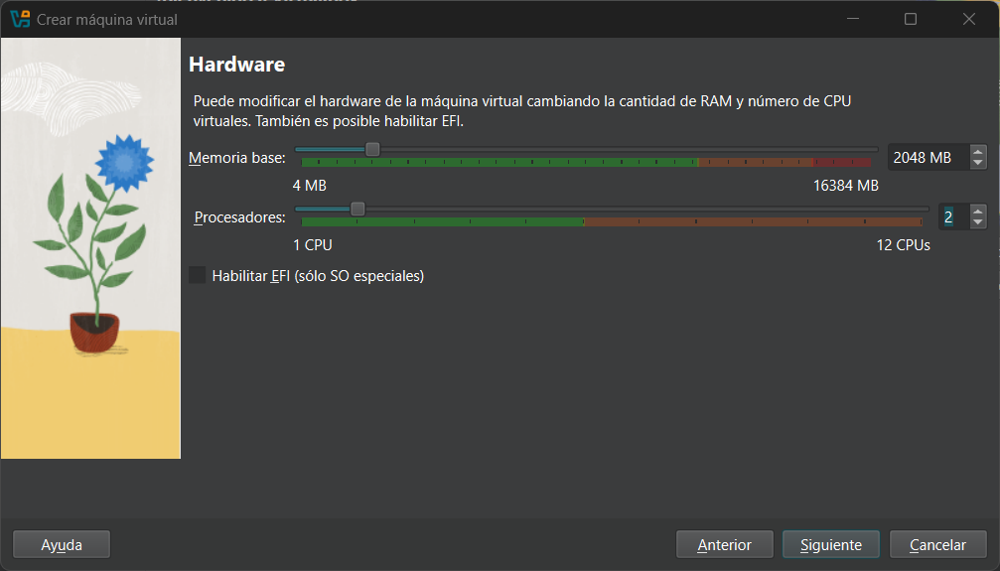
Note
🛠️ ¿Y si me he quedado corto o me he pasado?
No te preocupes. Puedes cambiar tanto la memoria RAM como el número de procesadores más adelante, aunque ya hayas instalado el sistema operativo.
Solo asegúrate de que la máquina virtual esté apagada, ve a Configuración → Sistema, y ajusta lo que necesites desde las pestañas Placa base (RAM) y Procesador (CPU).
Warning
No asignes demasiados recursos o tu ordenador real o irá muy lento.
2.4. Crear el disco duro virtual
Selecciona "Crear un disco duro virtual ahora".
Deja desmarcada "Reservar tamaño completo".
Tamaño de disco: 25 GB.
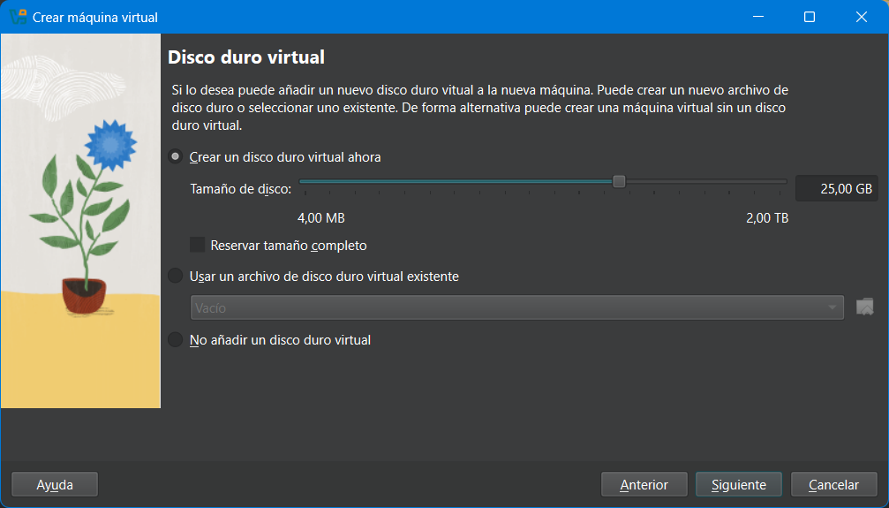
Note
💾 ¿Qué significa “Reservar tamaño completo”?
☑️Reservar tamaño completo: el archivo del disco virtual ocupará solo el espacio que necesite e irá creciendo hasta el tamaño máximo que indiques (por ejemplo, 25 GB). Es más flexible y ocupa menos al principio.
🔲Reservar tamaño completo: reserva todo el espacio desde el principio. Suele ser más rápido en lectura/escritura, pero ocupa más en tu disco real desde el primer momento.
🗂️ ¿Y si ya tengo un disco virtual?
Puedes elegir la opción “usar un archivo de disco duro virtual existente” si ya tenías una máquina creada antes o si el profesor te ha dado un archivo .vdi listo para usar.
2.5. Resumen

Observa el resumen para verificar que todo está correcto antes de darle a Terminar.
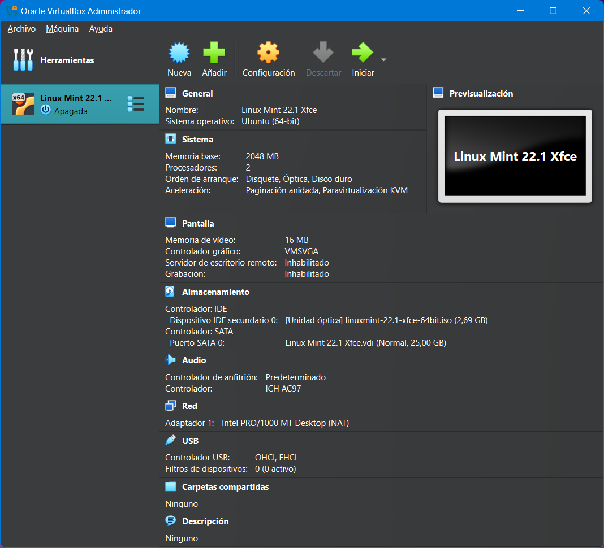
2.6. (opcional) Configurar la ISO como disco de arranque
Important
Este punto es opcional y solo usarlo en caso de que la máquina no arraque.
Una vez creada la máquina, selecciónala y pulsa "Configuración".
Ve a la sección Almacenamiento.
Haz clic en el icono del disco vacío bajo "Controlador: IDE".
A la derecha, haz clic en el icono del disco y selecciona "Elegir un archivo de disco".
Busca la ISO de Linux Mint que hayas descargado (o la que te haya proporcionado el profesor).
3. Instalar Linux Mint XFCE en la máquina virtual
Ya tenemos la máquina creada y lista para arrancar. Ahora vamos a iniciar el sistema desde la ISO, acceder al entorno Live de Linux Mint y proceder con la instalación completa dentro de la máquina virtual.
Tip
Este proceso es muy similar al de instalar un sistema operativo en un ordenador real. Es una de las mejores formas de aprender cómo funciona un sistema Linux desde cero.
3.1. Iniciar la máquina virtual por primera vez
Selecciona tu máquina en VirtualBox.
Pulsa en "Iniciar" (o haz doble clic sobre la máquina).
Aparecerá un menú de arranque. Elige la opción por defecto:
Start Linux Mint Xfce 64-bit (u otra versión similar según la ISO que uses).
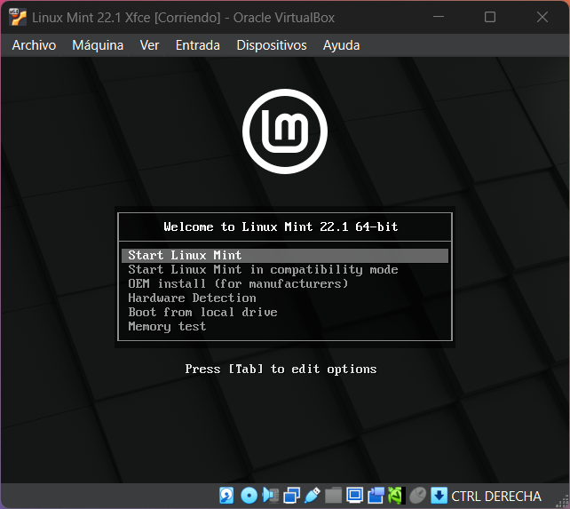
Note
Este menú no es el instalador. Solo está cargando el sistema en modo Live, para que puedas probarlo sin instalar nada todavía.
3.2. Entrar en el escritorio Live
Una vez arranque el entorno Live, verás el escritorio de Linux Mint. Es un entorno funcional donde podrás abrir aplicaciones, terminales, configuraciones, navegar por internet, etc.
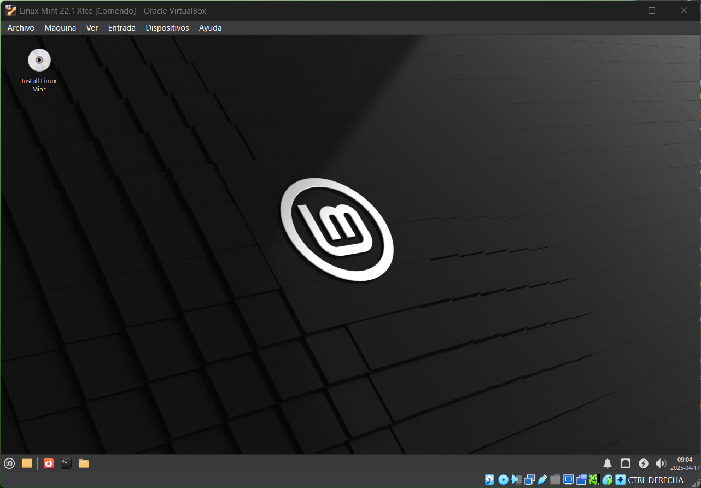
Note
El modo Live es muy útil para probar Linux sin hacer cambios en tu equipo. Pero en este curso, vamos a hacer la instalación completa para tener una VM funcional y persistente.
Tip
🤓 ¿Quieres comprobar que realmente estás usando Linux?
Abre el navegador dentro de la máquina virtual e introduce esta dirección:
🔗 https://www.whatismybrowser.com
En la parte superior de la página verás el sistema operativo que estás utilizando. Si todo ha ido bien, debería decir algo como:
“Your web browser looks like: Chrome 135 on Windows 11”
“Your web browser looks like: Firefox 137 on Linux”
Es una forma rápida y visual de confirmar que tu entorno Linux está funcionando correctamente.
3.3. Instalación paso a paso de Linux
Desde el modo Live, hacemos clic en el icono de 💿Install Linux Mint que tenemos en el escritorio.
Al iniciar el instalador, se abrirá un asistente que te guiará por los distintos pasos para instalar el sistema en tu máquina virtual.
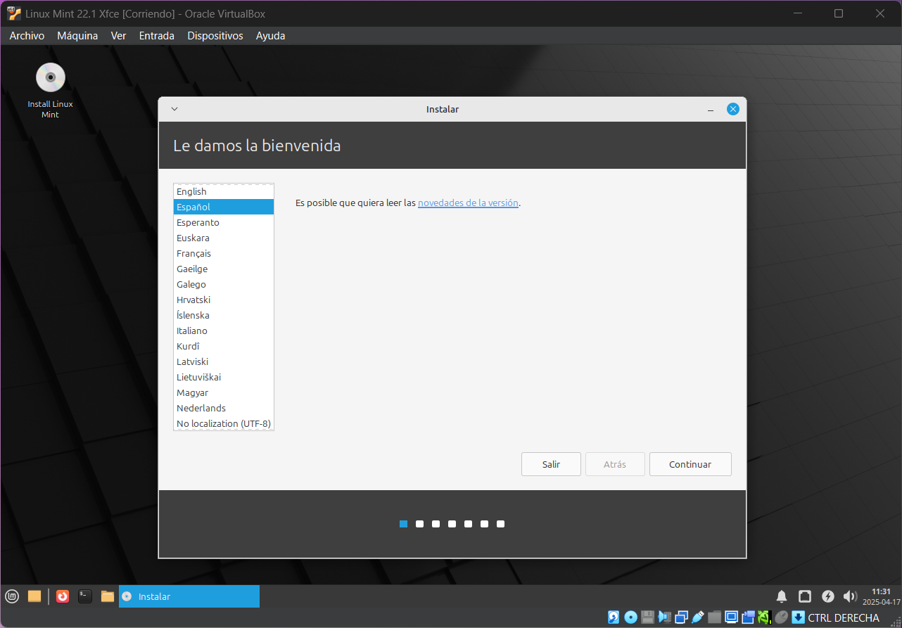
Paso 1: Seleccionar el idioma
Elige Español (u otro si prefieres).
Haz clic en Continuar.
Paso 2: Distribución del teclado
Se recomienda dejarlo como Español - Español (o "Spanish - Spanish").
Paso 3: Instalar software de terceros
Marca “Instalar los códecs multimedia”. Se usarán en reproductores de vídeo y así lo tenemos desde el inicio.
Paso 4: Tipo de instalación
Elige "Borrar disco e instalar Linux Mint".
No te preocupes, esto solo afecta al disco virtual de la VM, no a tu ordenador real.
Haz clic en Instalar ahora.
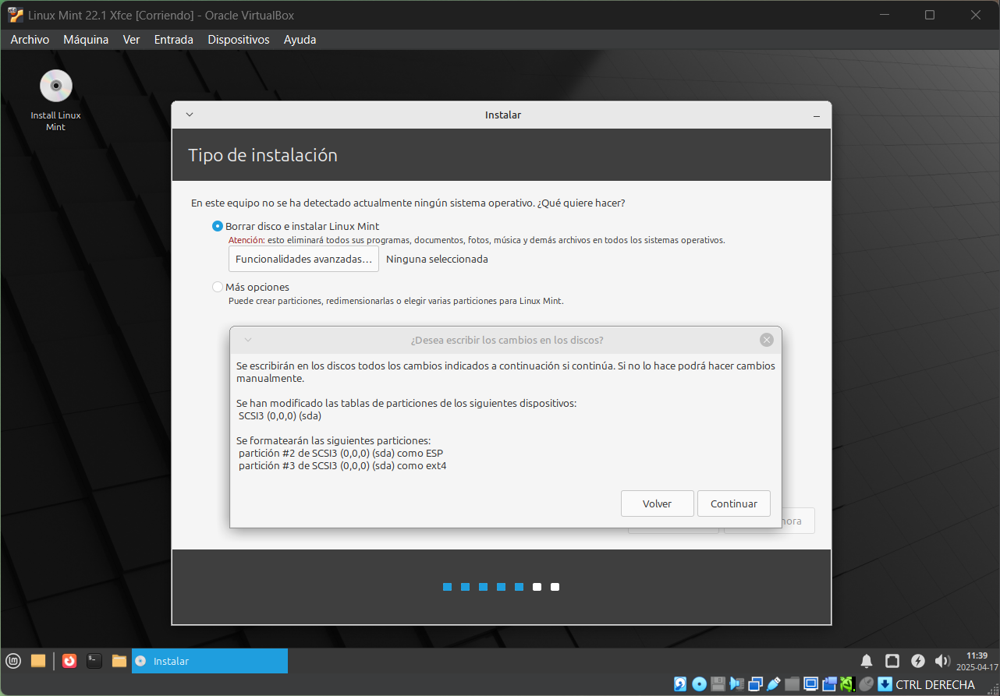
El instalador te mostrará un resumen de los cambios en el disco.
Pulsa en Continuar.
Paso 6: Zona horaria
Selecciona tu ubicación en el mapa o escribe por ejemplo: Madrid.
Haz clic en Continuar.
Paso 7: Datos de usuario
Caution
Es importante que rellenes los datos con los valores indicados, no los que tu quieras. Así podremos identificarnos cuando hagamos pruebas de red.
Su nombre: Pon tu nombre completo y un apellido. Por ejemplo:
Bruno Díaz.El nombre de su equipo: Usamos tu nombre seguido del sufijo
-linuxVM. Ejemplo:bruno-linuxVM.Nombre de usuario: alumno-tunombre. Por ejemplo:
alumno-bruno. Nada de tildes, ñ, diminutivos ni cosas raras.Contraseña: La misma para todo el mundo: Alumno1234.
Dejamos seleccionado “Solicitar mi contraseña para iniciar sesión”.
Haz clic en Continuar.
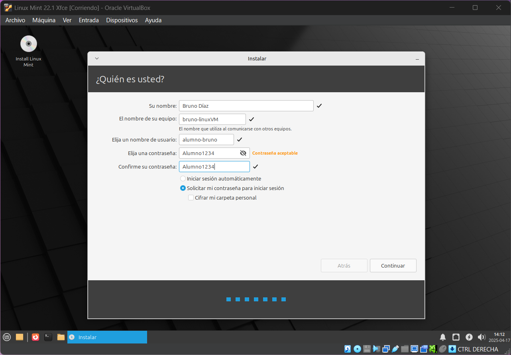
Important
Es muy importante recordar tu nombre de usuario y contraseña, ya que los necesitarás para acceder y hacer cambios más adelante.
Tras esto, comenzará la instalación. Verás una barra de progreso y algunas diapositivas informativas sobre Linux Mint.
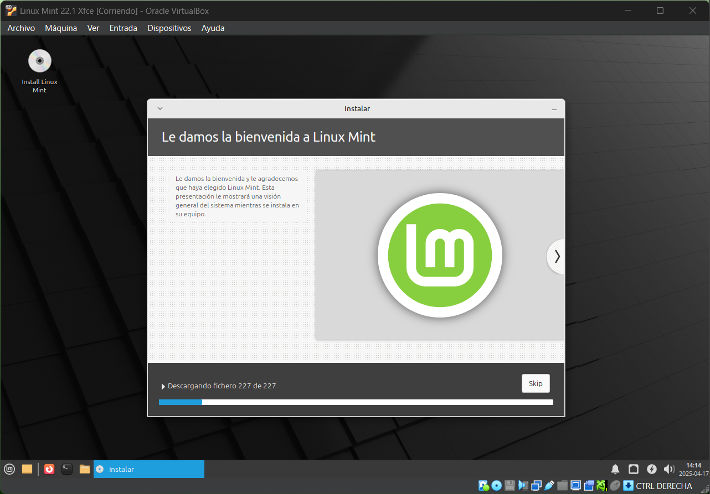
Cuando termine:
Verás el mensaje "La instalación ha finalizado".
Haz clic en Reiniciar ahora.
IMPORTANTE: Cuando la VM comience a reiniciarse, puede que veas el mensaje “Retire el medio de instalación”. Pulsamos una tecla y eso hará que se “extraiga” el CD de instalación y arranque la máquina normalmente. Si da algún problema apaga la máquina y en la configuración habrá que extraer el CD de instalación virtualmente.
3.4. Primer arranque y comprobaciones iniciales
Tras reiniciar la máquina virtual, Linux Mint debería arrancar desde el disco duro virtual que creamos. Verás la pantalla de carga y, en unos segundos, el escritorio XFCE.
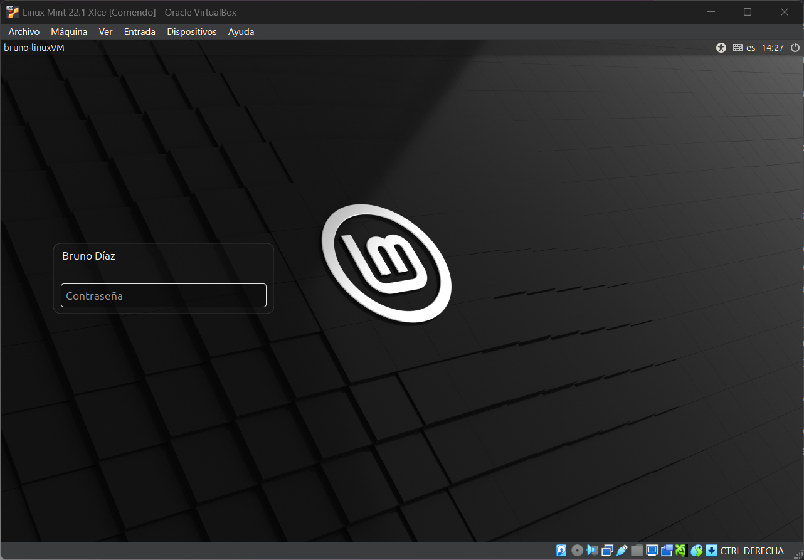
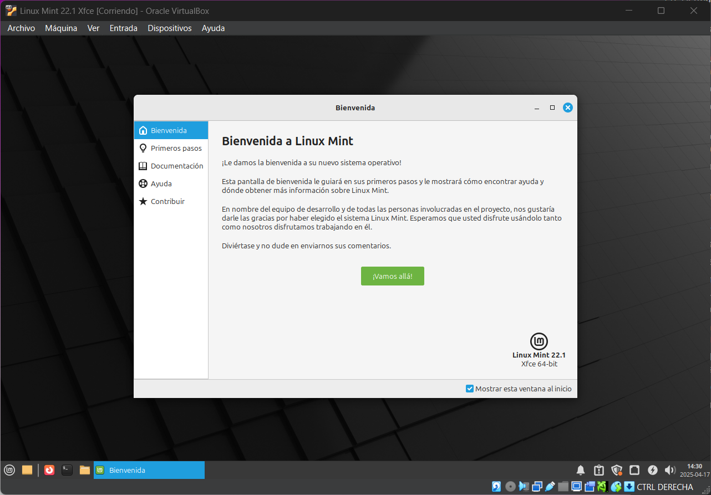
¿Qué debemos comprobar ahora?
Que el sistema arranca sin errores.
Que podemos iniciar sesión con nuestro usuario y contraseña.
Que el idioma es correcto.
Cerramos la pantalla de Bienvenida y desmarcamos “Mostrar al inicio”, para que no vuelva a salir.
Que puedes abrir el navegador, el gestor de archivos y el terminal.
Que la resolución de pantalla es cómoda y no se ve todo muy pequeño o muy grande.
Note
Si la resolución de pantalla es muy baja o no se adapta al tamaño de la ventana, puede que necesites instalar las Guest Additions más adelante. Lo veremos cuando toquemos las configuraciones extra.
Caution
Estás en un entorno nuevo. Si tienes algún problema pide ayuda. No intentes solucionarlo por tu cuenta.
4. Puesta a punto del sistema
Una vez instalado Linux Mint XFCE en la máquina virtual, es importante hacer una serie de ajustes para dejar el sistema listo antes de comenzar a trabajar con él. Esta puesta a punto garantiza que todo funcione correctamente y que la experiencia sea lo más fluida posible dentro de la VM.
Important
Este punto no trata sobre cómo usar Linux ni comandos, ni gestión de archivos. Nos centraremos exclusivamente en dejar preparada la máquina virtual que acabamos de instalar.
4.1. Cambiar la resolución de pantalla
Si la pantalla se ve muy pequeña o con baja resolución:
Ve a Menú → Configuración → Pantalla.
Ajusta la resolución a algo más cómodo, como
1280x800o superior.
Note
Si no aparecen más resoluciones disponibles, es probable que necesites instalar las Guest Additions de VirtualBox.
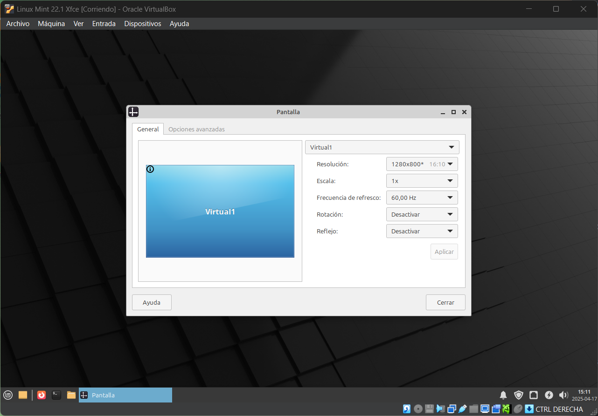
4.2. Instalar Complementos de invitado (Guest Additions)
Las Guest Additions mejoran la integración de la VM con el sistema anfitrión:
Ajustan la resolución y el tamaño de las ventanas automáticamente.
Permiten compartir portapapeles (copiar y pegar).
Facilitan la integración del ratón y carpetas compartidas.
🪟 Desde el menú de la ventana de la VM:
Dispositivos → Insertar imagen de CD de los Complementos de invitado
Luego:
Se montará un CD en el escritorio (es como si hubiéramos introducido un CD en nuestro ordenador virtual).
Ábrelo y ejecuta el archivo
VBoxLinuxAdditions.run.
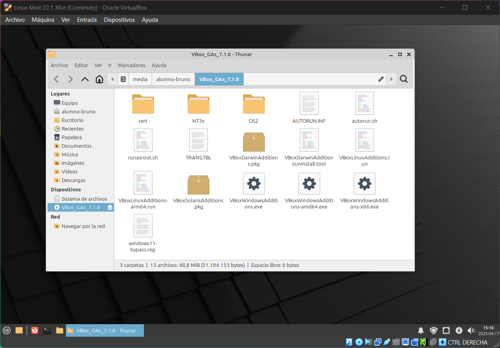
Warning
Si al hacer doble clic no pasa nada, abre un terminal dentro del directorio (botón derecho y Abrir terminal aquí) y ejecuta:
xxxxxxxxxx11sudo ./VBoxLinuxAdditions.run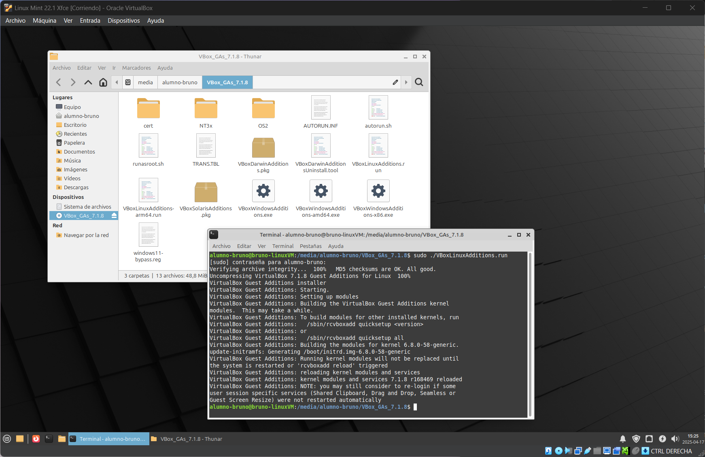
Tip
Tras la instalación, reinicia la máquina para aplicar los cambios.
Una vez terminada y reiniciada la aplicación, puedes extraer la ISO de la unidad virtual de CD.
4.3. Activar portapapeles compartido y arrastrar/soltar
Después de instalar las Guest Additions, es posible habilitar funciones extra que permiten copiar y pegar texto entre el sistema anfitrión (tu equipo real) y la máquina virtual, o incluso arrastrar archivos de un lado a otro.
Tip
Será especialmente útil, para poder copiar comandos largos desde el temario hasta la terminal de la VM. Aunque te recomiendo que escribas tu los propios comandos, para que los vayas memorizando.
Para activarlo:
Apaga la máquina virtual si está encendida.
En VirtualBox, selecciona la VM y haz clic en Configuración → General → Avanzado.
Cambia estas opciones:
Portapapeles compartido → selecciona Bidireccional
Arrastrar y soltar → Déjalo deshabilitado. No suele funcionar y así evitamos problemas
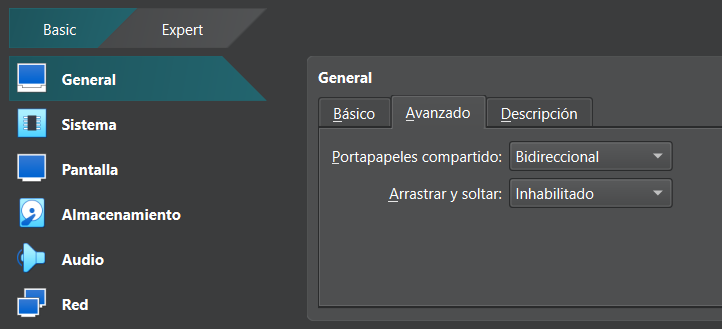
Note
Estas opciones solo están disponibles si las Guest Additions están correctamente instaladas.
4.4. Actualizar el sistema
Antes de comenzar a trabajar con Linux Mint es recomendable tener el sistema actualizado.
Abre el Gestor de actualizaciones desde el menú.
Haz clic en Actualizar y luego en Instalar actualizaciones.
Es posible que te pida la contraseña.
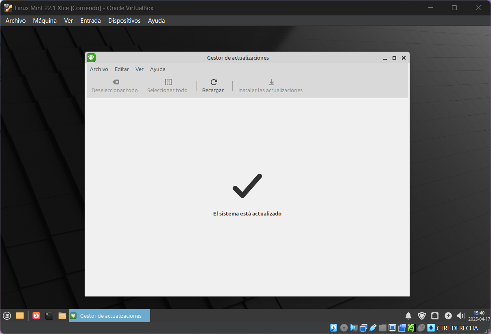
Note
También puedes actualizar desde el terminal con:
xxxxxxxxxx11sudo apt update && sudo apt upgrade
4.5. Apagar el sistema
Cuando termines de trabajar con tu máquina virtual, es importante apagarla correctamente desde dentro del sistema operativo, igual que harías con un equipo real.
Para apagar Linux Mint:
Haz clic en el Whisker Menú o pulsa la tecla Windows. Es el equivalente al botón de Inicio de Windows.
A la derecha del nombre de usuario aparece el botón de apagado ⏻ que muestra un menú con las opciones de apagado del sistema.
Confirma con "Apagar".
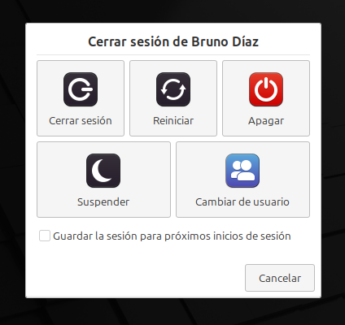
Tip
También puedes apagar el sistema desde el terminal con el siguiente comando:
xxxxxxxxxx11sudo poweroffWarning
No cierres la ventana de VirtualBox a lo bruto (con la X) ni apagues la máquina desde el menú de VirtualBox, salvo que el sistema se quede colgado. Siempre que puedas, apágalo desde dentro de Linux Mint para evitar errores o pérdida de datos.
Exactamente igual que harías con una máquina real.
Máquina lista para trabajar
Ya tienes tu máquina virtual creada, Linux Mint instalado y todo listo para empezar a trabajar.
Important
A partir de ahora, podrás practicar con total seguridad sin poner en riesgo tu ordenador.
Esta máquina virtual será tu laboratorio personal durante todo el curso.
En próximos temas aprenderemos los conceptos básicos de Linux, cómo moverte por el sistema y empezar a administrarlo poco a poco.
🔁 Si en algún momento necesitas repetir la instalación, puedes volver a este documento y seguir los pasos desde el principio.
Tip
💾 Clona tu máquina ahora que está perfecta
Si ya tienes el sistema instalado, actualizado y funcionando correctamente, es un buen momento para hacer una copia o clon de la máquina virtual.
Así, si más adelante algo se rompe o haces alguna prueba arriesgada, podrás volver a este punto sin tener que repetir todo el proceso de instalación.
Puedes hacer la clonación desde el propio VirtualBox, con la opción:
Botón derecho sobre la VM → Clonar (dejando todas las opciones por defecto)
🎉 ¡Enhorabuena por llegar hasta aquí!